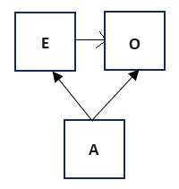
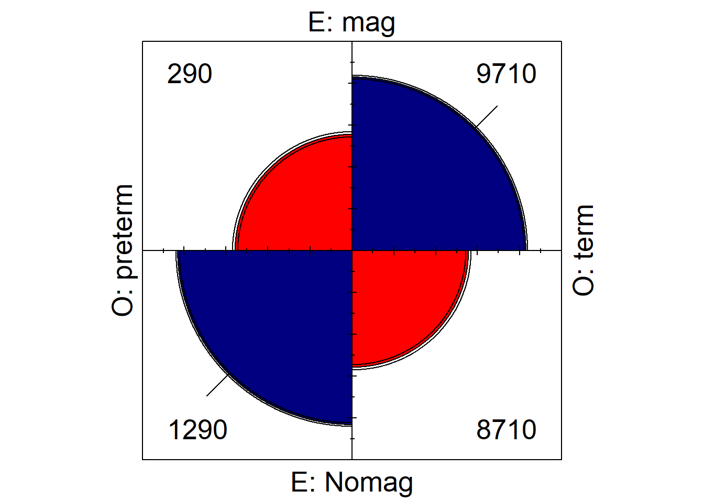
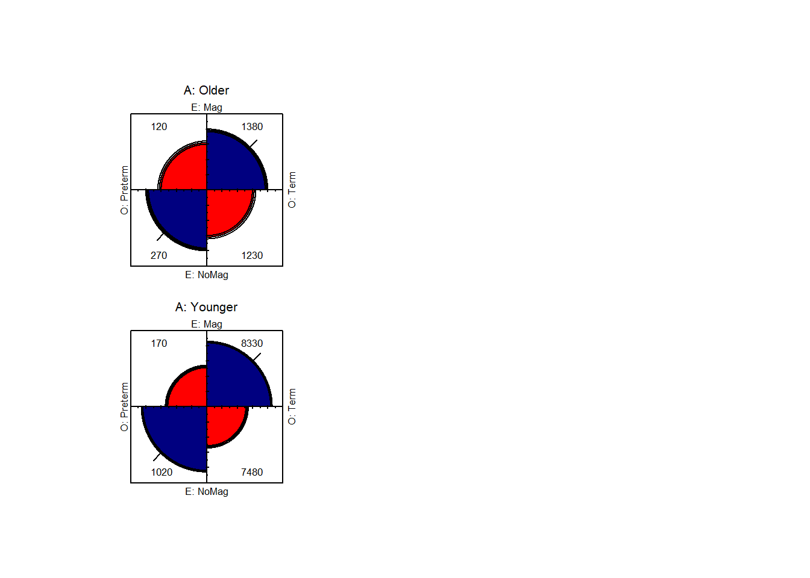
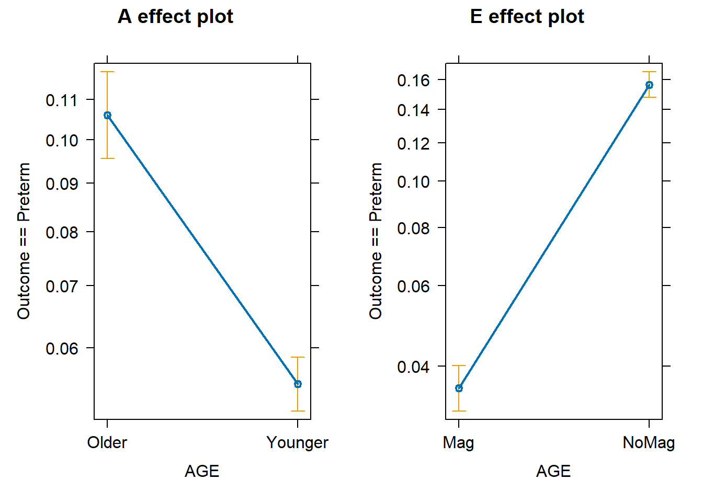
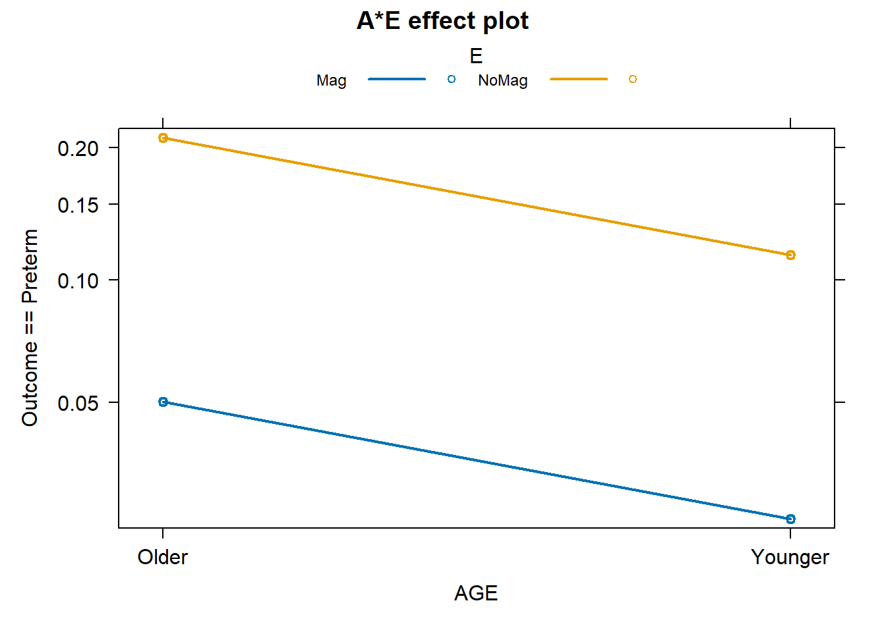

Code
library(epitools)
library(gmodels)
library(effects)
library(car)
library(vcdExtra)
library(vcd)
library("vembedr")
library(tidyverse)
library(sjPlot)
options(scipen=999) #disables scientific notationBarboza-Salerno
This document demonstrates how to use various R packages, such as epitools and vcm to identify confounding and interaction effects in epidemiological studies. We are going to follow the hypothetical example presented in your required reading for Day 3 from Howards, (2018). An overview of confounding. Part 1: The concept and how to address it. Acta Obstetricia et Gynecologica Scandinavica, 97(4), 394–399. https://doi.org/10.1111/aogs.13295. The example is presented in the appendice to the article, so make sure you read those as well. In the interest of time, I will demonstrate how to use R to replicate the analysis in appendix 1. I encourage you to attempt to replicate the other analyses as well, at your leisure.
Suppose we are interested in the effect of using magnesium supplements (E) on preterm birth (O). Further supposed that among pregnant women, older mothers (AGE (A) = confounder) are more likely to take supplements than younger mothers, and that older maternal age is associated with increased risk of preterm birth.
Note the paper refers us to Figure 1a in the “companion paper” paper, however I do not see such a figure. It probably looks like this:

The data are provided in the table below:
| Total Population | Older Mothers | Younger Mothers | ||||
| Magnesium | No Magnesium | Magnesium | No Magnesium | Magnesium | No Magnesium | |
| Preterm | 160 | 630 | 80 | 90 | 80 | 540 |
| Term | 4840 | 4370 | 920 | 410 | 3,920 | 3,960 |
| Total | 5,000 | 5,000 | 1,000 | 500 | 4,000 | 4,500 |
| Risk | 0.0320 | 0.1260 | 0.0800 | 0.1800 | 0.0200 | 0.1200 |
| RD | -0.0940 | 0.0000 | -0.1000 | 0.0000 | -0.1000 | 0.0000 |
Make sure you install the packages required to run this lab
epitools is an R package that allows you to perform basic epidemiologic calculations such as the risk ratio (RR) and odds ratio (OR).effects is an R package that allows you to make graphical and tabular effect displays of interactions, for various statistical models with linear predictorsgmodels is an R package that allows you to display quantities of interest (e.g., odds ratios) in contingency tablesThe car library is preinstalled wtih R base, so you don’t need to install it.
In this example, we will go over how to use these tools to estimate the risk ratio and odds ratios using the contingency tables reproduced in Howards, et al. (2018).
In the example, magnesium (or not) is the exposure (E) and preterm birth (or term) is the outcome (O).
In this example, the risk difference (RD) comparing magnesium supplementation to no supplementation is the same for older and younger mothers, but the RD for the total population is biased because a higher proportion of women taking magnesium are older (20%) compared with the women not using supplements (10%).
Notice the typo in the text, 10% and 20% are percentages, not proportions.
In any event, this calculation was made as follows:
It is important to have the table in the correct format. By default, the unexposed group (exposure = 0; here ‘no magnesium’) is in the first row, and the non-outcome (outcome = 0; here ‘term’) is in the first column. That means we would have this arrangement of the data in our table.
| Term | Preterm | |
| No Mag | 4370 | 630 |
| Mag | 4840 | 160 |
The table that is presented in the appendix, however, is not in that format. But, you can use the epitools library to re-arrange the table arrangement (i.e., columns and rows) with the rev() argument so that the analysis will use the contingency table where the exposed group (exposure = 1) is in the first row and the outcome (outcome = 1) is in the first column.
Note that there are a lot of different things that you need to figure out before conducting a statistical analysis. The fact that the table was not in the proper format came from trial and error.
Load the data tables from the appendix in the format it appears in Table 1.1
[,1] [,2]
[1,] 4370 630
[2,] 4840 160 [,1] [,2]
[1,] 410 90
[2,] 920 80 [,1] [,2]
[1,] 3960 540
[2,] 3920 80The risk and RD estimates for the population are as follows:
$data
Outcome
Predictor Disease1 Disease2 Total
Exposed1 4370 630 5000
Exposed2 4840 160 5000
Total 9210 790 10000
$measure
risk ratio with 95% C.I.
Predictor estimate lower upper
Exposed1 1.0000000 NA NA
Exposed2 0.2539683 0.2144727 0.300737
$p.value
two-sided
Predictor midp.exact
Exposed1 NA
Exposed2 0
two-sided
Predictor fisher.exact
Exposed1 NA
Exposed2 0.000000000000000000000000000000000000000000000000000000000000000000000006874807
two-sided
Predictor chi.square
Exposed1 NA
Exposed2 0.0000000000000000000000000000000000000000000000000000000000000000000539967
$correction
[1] FALSE
attr(,"method")
[1] "Unconditional MLE & normal approximation (Wald) CI"The risk ratio is .254 with a 95% confidence interval (.214, .301) which is significant at the \(p < .001\) level. Therefore, women in the exposure group 2, (i.e., who took magnesium), had a 74.6% lower risk \((1 - .254) \times 100\) of preterm birth compared to women who did not take magnesium.
[1] "Percent change in the risk: 0.746031746031746"$data
Outcome
Predictor Disease1 Disease2 Total
Exposed1 4370 630 5000
Exposed2 4840 160 5000
Total 9210 790 10000
$measure
odds ratio with 95% C.I.
Predictor estimate lower upper
Exposed1 1.000000 NA NA
Exposed2 0.229306 0.1918646 0.2740541
$p.value
two-sided
Predictor midp.exact
Exposed1 NA
Exposed2 0
two-sided
Predictor fisher.exact
Exposed1 NA
Exposed2 0.000000000000000000000000000000000000000000000000000000000000000000000006874807
two-sided
Predictor chi.square
Exposed1 NA
Exposed2 0.0000000000000000000000000000000000000000000000000000000000000000000539967
$correction
[1] FALSE
attr(,"method")
[1] "Unconditional MLE & normal approximation (Wald) CI"The odds ratio is 0.229 with a 95% CI of 0.192, 0.274. The p-value is <0.001. Therefore women who took magnesium had a 78% lower odds of a preterm birth compared to women who did not take magnesium.
Given that you have taken Biostatistics I and II, you should be able to calculate the risk ratio, risk difference (RD), and odds ratio by hand. Here is how to do that in R:
[1] 0.2539683[1] -0.094[1] 0.229306Let’s suppose we are interested in whether maternal age is a confounder on the magnesium to birth outcome pathway in the figure.
The figure is commonly referred to as a DAG, or a directed acyclic graph. A good introduction to DAGs can be accessed here:
To check if there is confounding, we need to determine if the confounder meets three criteria:
As the figure at the top of this document shows, the confounding variable is associated with the outcome and also with the ‘treatment.’
Note: by definition, the confounding variable is not on the causal pathway between the exposure and outcome.
For the first criterion, we look at the association between magnesium uptake and birth outcome.
freq_tbl <- tribble(
~A, ~E, ~O, ~count,
"Older", "Mag", "Preterm", 80,
"Older","Mag", "Term", 920,
"Older","NoMag", "Preterm", 90,
"Older","NoMag", "Term", 410,
"Younger", "Mag", "Preterm", 80,
"Younger","Mag", "Term", 3920,
"Younger","NoMag", "Preterm", 540,
"Younger","NoMag", "Term", 3960
) %>%
print() %>%
as.data.frame()# A tibble: 8 × 4
A E O count
<chr> <chr> <chr> <dbl>
1 Older Mag Preterm 80
2 Older Mag Term 920
3 Older NoMag Preterm 90
4 Older NoMag Term 410
5 Younger Mag Preterm 80
6 Younger Mag Term 3920
7 Younger NoMag Preterm 540
8 Younger NoMag Term 3960This amounts to asking whether younger women had lower risk/odds of preterm birth compared to older women. To test this hypothesis, I need a 2x2 table with age of women on the row and birth outcome as column We can use the margin.table() to collapse any table over an ‘omitted’ dimension, like this:
, , A = Older
O
E Preterm Term
Mag 80 920
NoMag 90 410
, , A = Younger
O
E Preterm Term
Mag 80 3920
NoMag 540 3960 [,1] [,2]
[1,] 620 7880
[2,] 170 1330$data
Outcome
Predictor Disease1 Disease2 Total
Exposed1 620 7880 8500
Exposed2 170 1330 1500
Total 790 9210 10000
$measure
risk ratio with 95% C.I.
Predictor estimate lower upper
Exposed1 1.0000000 NA NA
Exposed2 0.9564298 0.9383823 0.9748244
$p.value
two-sided
Predictor midp.exact fisher.exact chi.square
Exposed1 NA NA NA
Exposed2 0.0000003287298 0.000000322838 0.00000008943258
$correction
[1] FALSE
attr(,"method")
[1] "Unconditional MLE & normal approximation (Wald) CI"$data
Outcome
Predictor Disease1 Disease2 Total
Exposed1 620 7880 8500
Exposed2 170 1330 1500
Total 790 9210 10000
$measure
odds ratio with 95% C.I.
Predictor estimate lower upper
Exposed1 1.0000000 NA NA
Exposed2 0.6155569 0.5144876 0.7364808
$p.value
two-sided
Predictor midp.exact fisher.exact chi.square
Exposed1 NA NA NA
Exposed2 0.0000003287298 0.000000322838 0.00000008943258
$correction
[1] FALSE
attr(,"method")
[1] "Unconditional MLE & normal approximation (Wald) CI"Younger women had a lower risk (RR = 0.671; 95% CI: 0..582, 0.774) and odds (OR = 0.616; 95% CI: 0.514, 0.736 ) of preterm birth compared to older women. This result is significant. The first criterion is satisfied.
This amounts to asking whether younger women had lower risk/odds of magnesium uptake compared to older women?
E
A Mag NoMag
Older 1000 500
Younger 4000 4500 [,1] [,2]
[1,] 4000 1000
[2,] 4500 500$data
Outcome
Predictor Disease1 Disease2 Total
Exposed1 4000 1000 5000
Exposed2 4500 500 5000
Total 8500 1500 10000
$measure
risk ratio with 95% C.I.
Predictor estimate lower upper
Exposed1 1.0 NA NA
Exposed2 0.5 0.4524463 0.5525517
$p.value
two-sided
Predictor midp.exact fisher.exact
Exposed1 NA NA
Exposed2 0 0.000000000000000000000000000000000000000000004434861
two-sided
Predictor chi.square
Exposed1 NA
Exposed2 0.00000000000000000000000000000000000000000001498468
$correction
[1] FALSE
attr(,"method")
[1] "Unconditional MLE & normal approximation (Wald) CI"$data
Outcome
Predictor Disease1 Disease2 Total
Exposed1 4000 1000 5000
Exposed2 4500 500 5000
Total 8500 1500 10000
$measure
odds ratio with 95% C.I.
Predictor estimate lower upper
Exposed1 1.0000000 NA NA
Exposed2 0.4444444 0.3959679 0.4988558
$p.value
two-sided
Predictor midp.exact fisher.exact
Exposed1 NA NA
Exposed2 0 0.000000000000000000000000000000000000000000004434861
two-sided
Predictor chi.square
Exposed1 NA
Exposed2 0.00000000000000000000000000000000000000000001498468
$correction
[1] FALSE
attr(,"method")
[1] "Unconditional MLE & normal approximation (Wald) CI"Younger women had a lower risk (RR = 0.671; 95% CI: 0..582, 0.774) and odds (OR = 0.616; 95% CI: 0.514, 0.736 ) of magnesium uptake compared to older women. This result is significant. The second criterion is satisfied.
This is satisfied here.
We can check to see how much of an impact age has on the exposure to birth outcome using stratification. We do this by stratifying the groups into those who are younger and older. Then we evaluate the exposure to outcome relationship.
Here is an illustration of how age is stratified into two strata (age = older mothers v younger mothers).
The association between magnesium status and age can be estimated for each strata. Table3 <- matrix(c(150, 50, 1600, 800), nrow = 2, ncol = 2)
[1] "The risk is 0.108695652173913"$data
Outcome
Predictor Disease2 Disease1 Total
Exposed2 80 920 1000
Exposed1 90 410 500
Total 170 1330 1500
$measure
odds ratio with 95% C.I.
Predictor estimate lower upper
Exposed2 1.0000000 NA NA
Exposed1 0.3961353 0.2868284 0.5470976
$p.value
two-sided
Predictor midp.exact fisher.exact chi.square
Exposed2 NA NA NA
Exposed1 0.00000002325107 0.00000002240313 0.000000008439284
$correction
[1] FALSE
attr(,"method")
[1] "Unconditional MLE & normal approximation (Wald) CI"[1] 2.25[1] 0.1$data
Outcome
Predictor Disease2 Disease1 Total
Exposed2 80 3920 4000
Exposed1 540 3960 4500
Total 620 7880 8500
$measure
odds ratio with 95% C.I.
Predictor estimate lower upper
Exposed2 1.0000000 NA NA
Exposed1 0.1496599 0.117854 0.1900493
$p.value
two-sided
Predictor midp.exact
Exposed2 NA
Exposed1 0
two-sided
Predictor fisher.exact
Exposed2 NA
Exposed1 0.000000000000000000000000000000000000000000000000000000000000000000000000000001975685
two-sided
Predictor chi.square
Exposed2 NA
Exposed1 0.0000000000000000000000000000000000000000000000000000000000000000000004463894
$correction
[1] FALSE
attr(,"method")
[1] "Unconditional MLE & normal approximation (Wald) CI"[1] "The risk is 0.102040816326531"[1] 6[1] 0.1# A tibble: 10,000 × 2
mag birth
<chr> <chr>
1 Mag Preterm
2 Mag Preterm
3 Mag Preterm
4 Mag Preterm
5 Mag Preterm
6 Mag Preterm
7 Mag Preterm
8 Mag Preterm
9 Mag Preterm
10 Mag Preterm
# ℹ 9,990 more rows# A tibble: 4 × 3
mag birth n
<chr> <chr> <int>
1 Mag Preterm 160
2 Mag Term 4840
3 NoMag Preterm 630
4 NoMag Term 4370# A tibble: 4 × 3
E O count
<chr> <chr> <dbl>
1 Mag Preterm 160
2 Mag Term 4840
3 NoMag Preterm 630
4 NoMag Term 4370# A tibble: 4 × 6
E O count E_totals O_totals margin_total
<chr> <chr> <dbl> <dbl> <dbl> <dbl>
1 Mag Preterm 160 5000 790 10000
2 Mag Term 4840 5000 9210 10000
3 NoMag Preterm 630 5000 790 10000
4 NoMag Term 4370 5000 9210 10000
Cell Contents
|-------------------------|
| N |
| Expected N |
| Chi-square contribution |
| N / Col Total |
|-------------------------|
Total Observations in Table: 10000
|
| [,1] | [,2] | Row Total |
-------------|-----------|-----------|-----------|
[1,] | 4370 | 630 | 5000 |
| 4605.000 | 395.000 | |
| 11.992 | 139.810 | |
| 0.474 | 0.797 | |
-------------|-----------|-----------|-----------|
[2,] | 4840 | 160 | 5000 |
| 4605.000 | 395.000 | |
| 11.992 | 139.810 | |
| 0.526 | 0.203 | |
-------------|-----------|-----------|-----------|
Column Total | 9210 | 790 | 10000 |
| 0.921 | 0.079 | |
-------------|-----------|-----------|-----------|
Statistics for All Table Factors
Pearson's Chi-squared test
------------------------------------------------------------
Chi^2 = 303.6051 d.f. = 1 p = 0.0000000000000000000000000000000000000000000000000000000000000000000539967
Pearson's Chi-squared test with Yates' continuity correction
------------------------------------------------------------
Chi^2 = 302.3145 d.f. = 1 p = 0.000000000000000000000000000000000000000000000000000000000000000000103164
freq_tbl <- tribble(
~A, ~E, ~O, ~count,
"Older", "Mag", "Preterm", 120,
"Older","Mag", "Term", 1380,
"Older","NoMag", "Preterm", 270,
"Older","NoMag", "Term", 1230,
"Younger", "Mag", "Preterm", 170,
"Younger","Mag", "Term", 8330,
"Younger","NoMag", "Preterm", 1020,
"Younger","NoMag", "Term", 7480
) %>%
print() %>%
as.data.frame()# A tibble: 8 × 4
A E O count
<chr> <chr> <chr> <dbl>
1 Older Mag Preterm 120
2 Older Mag Term 1380
3 Older NoMag Preterm 270
4 Older NoMag Term 1230
5 Younger Mag Preterm 170
6 Younger Mag Term 8330
7 Younger NoMag Preterm 1020
8 Younger NoMag Term 7480In R,for2×2×K tables,the mantelhaen.test() function provides a test of overall association R pooled over strata, woolf_test() tests for equal odds ratios across strata (similar to the Breslow-Day test),andCMHtest() in vcdExtrapackage gives generalized CMHtests like those provided by the cmh option in SAS. Tests of similar hypotheses can be carried out using loglinear models(loglm())and generalized linear models(glm()),described in later lectures.Here is one simple way to test for association of Admit and Gender separately for each department. oddsratio() calculates and tests the (log) odds ratio for each stratum.
First, we need to convert the frequency table into a contingency table using the base R xtabs() function. The Cookbook for R shows an example of this.
Pearson's Chi-squared test with Yates' continuity correction
data: table_obj[, , A]
X-squared = 65.432, df = 1, p-value = 0.0000000000000006016
Pearson's Chi-squared test with Yates' continuity correction
data: table_obj[, , A]
X-squared = 651.31, df = 1, p-value < 0.00000000000000022
z test of coefficients:
Estimate Std. Error z value Pr(>|z|)
Older -0.926000 0.116510 -7.9478 0.000000000000001899 ***
Younger -1.899390 0.084359 -22.5155 < 0.00000000000000022 ***
---
Signif. codes: 0 '***' 0.001 '**' 0.01 '*' 0.05 '.' 0.1 ' ' 1
Mantel-Haenszel chi-squared test with continuity correction
data: table_obj
Mantel-Haenszel X-squared = 690.1, df = 1, p-value <
0.00000000000000022
alternative hypothesis: true common odds ratio is not equal to 1
95 percent confidence interval:
0.174209 0.226675
sample estimates:
common odds ratio
0.1987179
Woolf-test on Homogeneity of Odds Ratios (no 3-Way assoc.)
data: table_obj
X-squared = 45.792, df = 1, p-value = 0.00000000001315$`A:Older`
Cochran-Mantel-Haenszel Statistics for E by O
in stratum A:Older
AltHypothesis Chisq Df Prob
cor Nonzero correlation 66.291 1 0.00000000000000038905
rmeans Row mean scores differ 66.291 1 0.00000000000000038905
cmeans Col mean scores differ 66.291 1 0.00000000000000038905
general General association 66.291 1 0.00000000000000038905
$`A:Younger`
Cochran-Mantel-Haenszel Statistics for E by O
in stratum A:Younger
AltHypothesis Chisq Df
cor Nonzero correlation 652.8 1
rmeans Row mean scores differ 652.8 1
cmeans Col mean scores differ 652.8 1
general General association 652.8 1
Prob
cor 0.0000000000000000000000000000000000000000000000000000000000000000000000000000000000000000000000000000000000000000000000000000000000000000000000054882
rmeans 0.0000000000000000000000000000000000000000000000000000000000000000000000000000000000000000000000000000000000000000000000000000000000000000000000054882
cmeans 0.0000000000000000000000000000000000000000000000000000000000000000000000000000000000000000000000000000000000000000000000000000000000000000000000054882
general 0.0000000000000000000000000000000000000000000000000000000000000000000000000000000000000000000000000000000000000000000000000000000000000000000000054882In R,margin.table() collapses a table over dimensions not listed in the second argument.


Analysis of Deviance Table (Type II tests)
Response: O == "Preterm"
Df Chisq Pr(>Chisq)
A 1 122.11 < 0.00000000000000022 ***
---
Signif. codes: 0 '***' 0.001 '**' 0.01 '*' 0.05 '.' 0.1 ' ' 1
Call:
glm(formula = O == "Preterm" ~ A, family = "binomial", data = freq_tbl,
weights = freq_tbl$count)
Coefficients:
Estimate Std. Error z value Pr(>|z|)
(Intercept) -1.90096 0.05429 -35.02 <0.0000000000000002 ***
AYounger -0.68573 0.06206 -11.05 <0.0000000000000002 ***
---
Signif. codes: 0 '***' 0.001 '**' 0.01 '*' 0.05 '.' 0.1 ' ' 1
(Dispersion parameter for binomial family taken to be 1)
Null deviance: 11053 on 7 degrees of freedom
Residual deviance: 10942 on 6 degrees of freedom
AIC: 10946
Number of Fisher Scoring iterations: 6Add the main effect of magnesium
Analysis of Deviance Table (Type II tests)
Response: O == "Preterm"
LR Chisq Df Pr(>Chisq)
A 110.76 1 < 0.00000000000000022 ***
---
Signif. codes: 0 '***' 0.001 '**' 0.01 '*' 0.05 '.' 0.1 ' ' 1
Call:
glm(formula = O == "Preterm" ~ A + E, family = "binomial", data = freq_tbl,
weights = freq_tbl$count)
Coefficients:
Estimate Std. Error z value Pr(>|z|)
(Intercept) -2.93772 0.07623 -38.54 <0.0000000000000002 ***
AYounger -0.71614 0.06371 -11.24 <0.0000000000000002 ***
ENoMag 1.61086 0.06681 24.11 <0.0000000000000002 ***
---
Signif. codes: 0 '***' 0.001 '**' 0.01 '*' 0.05 '.' 0.1 ' ' 1
(Dispersion parameter for binomial family taken to be 1)
Null deviance: 11053 on 7 degrees of freedom
Residual deviance: 10199 on 5 degrees of freedom
AIC: 10205
Number of Fisher Scoring iterations: 6
NOTE: A:E does not appear in the model
Analysis of Deviance Table (Type II tests)
Response: O == "Preterm"
LR Chisq Df Pr(>Chisq)
A 110.76 1 < 0.00000000000000022 ***
---
Signif. codes: 0 '***' 0.001 '**' 0.01 '*' 0.05 '.' 0.1 ' ' 1
Call:
glm(formula = O == "Preterm" ~ A + E + A * E, family = "binomial",
data = freq_tbl, weights = freq_tbl$count)
Coefficients:
Estimate Std. Error z value Pr(>|z|)
(Intercept) -2.44235 0.09517 -25.662 < 0.0000000000000002 ***
AYounger -1.44947 0.12272 -11.811 < 0.0000000000000002 ***
ENoMag 0.92600 0.11651 7.948 0.0000000000000019 ***
AYounger:ENoMag 0.97339 0.14384 6.767 0.0000000000131501 ***
---
Signif. codes: 0 '***' 0.001 '**' 0.01 '*' 0.05 '.' 0.1 ' ' 1
(Dispersion parameter for binomial family taken to be 1)
Null deviance: 11053 on 7 degrees of freedom
Residual deviance: 10155 on 4 degrees of freedom
AIC: 10163
Number of Fisher Scoring iterations: 7tab_model(mod1, mod2, mod3,
collapse.ci = TRUE,
show.r2 = FALSE,
pred.labels = c("Intercept", "Age (Young v Older)", "Magnesium (No v Yes)", "Age x Mag (Younger, No)"),
dv.labels = c("Age only", "Age and Magnesium", "Model w/Interaction term"),
string.pred = "Coeffcient",
string.ci = "Conf. Int (95%)",
string.p = "P-Value"
)| Age only | Age and Magnesium | Model w/Interaction term | ||||
| Coeffcient | Odds Ratios | P-Value | Odds Ratios | P-Value | Odds Ratios | P-Value |
| Intercept | 0.15 (0.13 – 0.17) |
<0.001 | 0.05 (0.05 – 0.06) |
<0.001 | 0.09 (0.07 – 0.10) |
<0.001 |
| Age (Young v Older) | 0.50 (0.45 – 0.57) |
<0.001 | 0.49 (0.43 – 0.55) |
<0.001 | 0.23 (0.18 – 0.30) |
<0.001 |
| Magnesium (No v Yes) | 5.01 (4.40 – 5.72) |
<0.001 | 2.52 (2.01 – 3.18) |
<0.001 | ||
| Age x Mag (Younger, No) | 2.65 (1.99 – 3.51) |
<0.001 | ||||
| Observations | 8 | 8 | 8 | |||
---
title: "Confounding & Association"
author: "Barboza-Salerno"
---
## Introduction
This document demonstrates how to use various R packages, such as `epitools` and `vcm` to identify confounding and interaction effects in epidemiological studies. We are going to follow the hypothetical example presented in your required reading for [Day 3](/content/03-content.qmd) from Howards, (2018). [An overview of confounding. Part 1: The concept and how to address it.](https://obgyn.onlinelibrary.wiley.com/doi/pdfdirect/10.1111/aogs.13295) *Acta Obstetricia et Gynecologica Scandinavica*, 97(4), 394–399. https://doi.org/10.1111/aogs.13295. The example is presented in the appendice to the article, so make sure you read those as well. In the interest of time, I will demonstrate how to use R to replicate the analysis in appendix 1. I encourage you to attempt to replicate the other analyses as well, at your leisure.
### Hypothetical
Suppose we are interested in the effect of using *magnesium supplements* (E) on *preterm birth* (O). Further supposed that among pregnant women, older mothers (AGE (A) = confounder) are more likely to take supplements than younger mothers, and that older maternal age is associated with increased risk of preterm birth.
**Note** the paper refers us to Figure 1a in the "companion paper" paper, however I do not see such a figure. It probably looks like this:

The data are provided in the table below:
| | | | | | | |
|:---|:---:|:---:|:---:|:---:|:---:|:---:|
||Total Population| |Older Mothers| |Younger Mothers| |
||Magnesium|No Magnesium|Magnesium|No Magnesium|Magnesium|No Magnesium|
|Preterm|160|630|80|90|80|540|
|Term|4840|4370|920|410|3,920|3,960|
|Total|5,000|5,000|1,000|500|4,000|4,500|
|Risk|0.0320|0.1260|0.0800|0.1800|0.0200|0.1200|
|RD|-0.0940|0.0000|-0.1000|0.0000|-0.1000|0.0000|
: Table 1.1: Data from the 'idea' study design; and disaggregated by age
**Make sure you install the packages required to run this lab**
```{r eval=TRUE, warning=FALSE, message=FALSE}
library(epitools)
library(gmodels)
library(effects)
library(car)
library(vcdExtra)
library(vcd)
library("vembedr")
library(tidyverse)
library(sjPlot)
options(scipen=999) #disables scientific notation
```
### R packages required for the analysis
- `epitools` is an R package that allows you to perform basic epidemiologic calculations such as the risk ratio (RR) and odds ratio (OR).
- `effects` is an R package that allows you to make graphical and tabular effect displays of interactions, for various statistical models with linear predictors
- `gmodels` is an R package that allows you to display quantities of interest (e.g., odds ratios) in contingency tables
::: {.callout-note icon=true}
The `car` library is preinstalled wtih R base, so you don't need to install it.
:::
In this example, we will go over how to use these tools to estimate the risk ratio and odds ratios using the contingency tables reproduced in Howards, et al. (2018).
### Preliminaries
In the example, magnesium (or not) is the exposure (E) and preterm birth (or term) is the outcome (O).
In this example, the risk difference (RD) comparing magnesium supplementation to no supplementation is the same for older and younger mothers, but the RD for the total population is biased because a higher proportion of women taking magnesium are older (20%) compared with the women not using supplements (10%).
::: {.callout-note icon=false}
Notice the typo in the text, 10% and 20% are percentages, not proportions.
:::
In any event, this calculation was made as follows:
- Among all women, 1,000 older women took magnesium. Hence, the proportion is calculated as 1000/5000 = .20
- Among all women, 500 older women did NOT taking magnesium. Hence, the proportion is calculated as 500/5000 = .10
::: {.callout-note icon=false}
It is important to have the table in the correct format. By default, the unexposed group (exposure = 0; here 'no magnesium') is in the first row, and the non-outcome (outcome = 0; here 'term') is in the first column. That means we would have this arrangement of the data in our table.
:::
| | | |
|---|---|---|
||**Term**|**Preterm**|
|**No Mag**|4370|630|
|**Mag**|4840|160|
The table that is presented in the appendix, however, is not in that format. But, you can use the `epitools` library to re-arrange the table arrangement (i.e., columns and rows) with the rev() argument so that the analysis will use the contingency table where the exposed group (exposure = 1) is in the first row and the outcome (outcome = 1) is in the first column.
::: {.callout-note}
Note that there are a lot of different things that you need to figure out before conducting a statistical analysis. The fact that the table was not in the proper format came from trial and error.
:::
## Step 1
Load the data tables from the appendix in the format it appears in Table 1.1
```{r eval=T}
# Step 1: Create a matrix
(total <- matrix(c(4370, 4840, 630, 160), nrow = 2, ncol = 2))
(older <- matrix(c(410, 920, 90, 80), nrow = 2, ncol = 2))
(younger <- matrix(c(3960, 3920, 540, 80), nrow = 2, ncol = 2))
```
The risk and RD estimates for the population are as follows:
```{r}
(Risk = 160/(160+4840))
(RD = Risk - 660/(660 + 4340))
```
```{r}
all_risk <- riskratio.wald(total, rev = c("neither"))
all_risk
```
The risk ratio is .254 with a 95% confidence interval (.214, .301) which is significant at the $p < .001$ level. Therefore, women in the exposure group 2, (i.e., who took magnesium), had a 74.6% lower risk $(1 - .254) \times 100$ of preterm birth compared to women who did not take magnesium.
```{r}
print(paste("Percent change in the risk:", 1 - unlist(all_risk$measure)[2], sep = " "))
```
```{r}
oddsratio.wald(total, rev = c("neither"))
```
The odds ratio is 0.229 with a 95% CI of 0.192, 0.274. The p-value is <0.001. Therefore women who took magnesium had a 78% lower odds of a preterm birth compared to women who did not take magnesium.
Given that you have taken Biostatistics I and II, you should be able to calculate the risk ratio, risk difference (RD), and odds ratio by hand. Here is how to do that in R:
```{r}
### RR check
risk2 <- 160 / (160+4840)
risk1 <- 630/(630+4370)
(RR <- risk2/risk1)
(RD = risk2 - risk1)
(OR = (4370*160)/(4840*630))
```
```{r}
### OR check
num <- 4370 * 160
denom <- 4840 * 630
OR <- num / denom
OR
```
## Confounding
Let’s suppose we are interested in whether maternal age is a confounder on the magnesium to birth outcome pathway in the figure.
::: {.callout-note icon=False }
The figure is commonly referred to as a DAG, or a directed acyclic graph. A good introduction to DAGs can be accessed here:
:::
```{r eval = TRUE,echo=FALSE }
embed_url("https://youtu.be/PiekvYYHeVQ?list=PLliBbGBc5nn2QcZ-5K_S08wJR6kt2EK1R")
```
To check if there is confounding, we need to determine if the confounder meets three criteria:
1. The confounding variable is associated with the outcome
1. The confounding variable is associated with treatment assignment
1. The confounding variable is not on the causal pathway between the exposure and outcome
As the figure at the top of this document shows, the confounding variable is associated with the outcome and also with the 'treatment.'
::: {.callout-note icon=false}
## Pay Attention
Note: by definition, the confounding variable is not on the causal pathway between the exposure and outcome.
:::
For the first criterion, we look at the association between magnesium uptake and birth outcome.
#### Preliminaries: Wrangling the data for proper format
```{r}
freq_tbl <- tribble(
~A, ~E, ~O, ~count,
"Older", "Mag", "Preterm", 80,
"Older","Mag", "Term", 920,
"Older","NoMag", "Preterm", 90,
"Older","NoMag", "Term", 410,
"Younger", "Mag", "Preterm", 80,
"Younger","Mag", "Term", 3920,
"Younger","NoMag", "Preterm", 540,
"Younger","NoMag", "Term", 3960
) %>%
print() %>%
as.data.frame()
```
#### 1. Is age associated with birth outcomes? (i.e., is the counfounder associated with the outcome?)
This amounts to asking whether younger women had lower risk/odds of preterm birth compared to older women.
To test this hypothesis, I need a 2x2 table with age of women on the row and birth outcome as column
We can use the `margin.table()` to collapse any table over an 'omitted' dimension, like this:
```{r}
(table_obj <- xtabs(count ~ E + O + A, data=freq_tbl))
age_outcome <- margin.table(table_obj,c(3,2))
(age_outcome_tbl<- matrix(c(620, 170 , 7880, 1330), nrow = 2, ncol= 2))
```
```{r}
riskratio.wald(age_outcome_tbl, rev = c("neither")) #I already formatted it so exposure = 1 and outcome = 1 is in the first cell
```
```{r}
oddsratio.wald(age_outcome_tbl, rev = c("neither"))
```
Younger women had a lower risk (RR = 0.671; 95% CI: 0..582, 0.774) and odds (OR = 0.616; 95% CI: 0.514, 0.736 ) of preterm birth compared to older women. This result is significant. The first criterion is satisfied.
#### 2. Is age associated with magnesium uptake? (i.e., is the counfounder associated with the exposure?)
This amounts to asking whether younger women had lower risk/odds of magnesium uptake compared to older women?
```{r}
(age_exposure <- margin.table(table_obj,c(3,1)))
(age_exposure_tbl<- matrix(c(4000, 4500, 1000, 500), nrow = 2, ncol= 2))
```
```{r}
riskratio.wald(age_exposure_tbl, rev = c("neither"))
```
```{r}
oddsratio.wald(age_exposure_tbl, rev = c("neither"))
```
Younger women had a lower risk (RR = 0.671; 95% CI: 0..582, 0.774) and odds (OR = 0.616; 95% CI: 0.514, 0.736 ) of magnesium uptake compared to older women. This result is significant. The second criterion is satisfied.
#### 3. Age is not on the causal pathway between exposure and outcome?
This is satisfied here.
## Stratification
We can check to see how much of an impact age has on the exposure to birth outcome using stratification. We do this by stratifying the groups into those who are younger and older. Then we evaluate the exposure to outcome relationship.
Here is an illustration of how age is stratified into two strata (age = older mothers v younger mothers).
The association between magnesium status and age can be estimated for each strata.
Table3 <- matrix(c(150, 50, 1600, 800), nrow = 2, ncol = 2)
```{r}
older
```
```{r}
older_risk <- riskratio.wald(older, rev = c("both"))
```
```{r}
print(paste("The risk is", 1 - unlist(older_risk$measure)[2], sep = " "))
```
```{r}
oddsratio.wald(older, rev = c("both"))
```
```{r}
### RR check
risk1 <- 80 / (80+920)
risk2 <- 90/(90+410)
(RR <- risk2/risk1)
(RD = risk2 - risk1)
```
```{r}
younger
```
```{r}
younger_risk <- riskratio.wald(younger, rev = c("both"))
```
```{r}
oddsratio.wald(younger, rev = c("both"))
```
```{r}
print(paste("The risk is", 1 - unlist(younger_risk$measure)[2], sep = " "))
```
```{r}
### RR check
risk1 <- 80 / (80+3920)
risk2 <- 540/(540+3960)
(RR <- risk2/risk1)
(RD = risk2 - risk1)
```
```{r}
df <- tibble(
mag = c(rep("Mag", 5000), rep("NoMag", 5000)),
birth = c(rep("Preterm", 160), rep("Term", 4840 ), rep("Preterm", 630), rep("Term", 4370))
) %>%
print()
```
```{r}
table(df)
```
```{r}
# Basic example
df %>%
count(mag, birth)
```
```{r}
freq_tbl <- tribble(
~E, ~O, ~count,
"Mag", "Preterm", 160,
"Mag", "Term", 4840,
"NoMag", "Preterm", 630,
"NoMag", "Term", 4370
) %>%
print()
```
```{r}
# Add margins
freq_tbl %>%
group_by(E) %>%
mutate(E_totals = sum(count)) %>%
group_by(O) %>%
mutate(O_totals = sum(count)) %>%
ungroup() %>%
mutate(margin_total = sum(count))
```
```{r}
CrossTable(total,prop.t=FALSE,prop.r=FALSE,expected=TRUE)
```
```{r}
oddsratio(total, log=FALSE)
```
```{r}
freq_tbl <- tribble(
~A, ~E, ~O, ~count,
"Older", "Mag", "Preterm", 120,
"Older","Mag", "Term", 1380,
"Older","NoMag", "Preterm", 270,
"Older","NoMag", "Term", 1230,
"Younger", "Mag", "Preterm", 170,
"Younger","Mag", "Term", 8330,
"Younger","NoMag", "Preterm", 1020,
"Younger","NoMag", "Term", 7480
) %>%
print() %>%
as.data.frame()
```
## Stratified
In R,for*2×2×K* tables,the `mantelhaen.test()` function provides a test of overall association R pooled over strata, `woolf_test()` tests for equal odds ratios across strata (similar to the Breslow-Day test),` andCMHtest()` in `vcdExtrapackage` gives generalized `CMHtests` like those provided by the cmh option in SAS. Tests of similar hypotheses can be carried out using loglinear models(`loglm`())and generalized linear models(`glm`()),described in later lectures.Here is one simple way to test for association of Admit and Gender separately for each department. `oddsratio`() calculates and tests the (log) odds ratio for each stratum.
First, we need to convert the frequency table into a contingency table using the base R xtabs() function. The [Cookbook for R](http://www.cookbook-r.com/Manipulating_data/Converting_between_data_frames_and_contingency_tables/) shows an example of this.
```{r}
table_obj <- xtabs(count ~ E + O + A, data=freq_tbl)
```
```{r}
for (A in 1:2)
{
print(chisq.test(table_obj[,,A]))
}
```
```{r}
summary(oddsratio(table_obj))
```
```{r}
mantelhaen.test(table_obj)
woolf_test(table_obj)
CMHtest(table_obj)
```
In R,margin.table() collapses a table over dimensions not listed in the second argument.
```{r}
fourfold(margin.table(table_obj,c(1,2))) #two-wayplot
fourfold(table_obj,mfrow=c(2,3)) #three-wayplot
```
```{r}
freq_tbl$A <- as.factor(freq_tbl$A)
freq_tbl$E <- as.factor(freq_tbl$E)
freq_tbl$O <- as.factor(freq_tbl$O)
mod1 <-glm(O == "Preterm" ~ A, data= freq_tbl, weights=freq_tbl$count,family="binomial")
Anova(mod1,test="Wald")
summary(mod1)
```
## Modeling linear risk
Add the main effect of magnesium
```{r}
mod2 <-glm(O == "Preterm" ~ A + E, data= freq_tbl, weights=freq_tbl$count,family="binomial")
Anova(mod1,mod2="Wald")
summary(mod2)
```
```{r}
eff2 <- allEffects(mod2)
plot(eff2, xlab = "AGE", ylab = "Outcome == Preterm")
plot(effect("A:E", mod2),multiline=TRUE, xlab = "AGE", ylab = "Outcome == Preterm")
```
```{r}
mod3 <-glm(O == "Preterm" ~ A + E + A*E, data= freq_tbl, weights=freq_tbl$count,family="binomial")
Anova(mod1,mod3="Wald")
summary(mod3)
```
```{r}
tab_model(mod1, mod2, mod3,
collapse.ci = TRUE,
show.r2 = FALSE,
pred.labels = c("Intercept", "Age (Young v Older)", "Magnesium (No v Yes)", "Age x Mag (Younger, No)"),
dv.labels = c("Age only", "Age and Magnesium", "Model w/Interaction term"),
string.pred = "Coeffcient",
string.ci = "Conf. Int (95%)",
string.p = "P-Value"
)
```